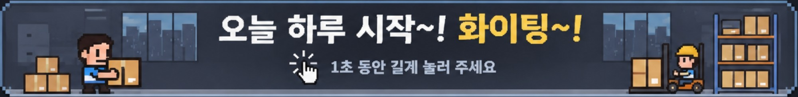

AI
물류비서
확인 중…
설정

오늘 하루 시작~!
화이팅~!
👆 1초 동안 길게 눌러 주세요
이벗 · 맨소래담
이지어드민 · 곡물도감
상시 컴퓨터가 켜져 있습니다
어디서 진행할까요? 이 컴퓨터에서 하면 이지어드민과 이벗이 여기서 열립니다. 이 탭을 닫으면 상시 컴퓨터가 다시 맡습니다.
상시 컴퓨터에 맡기기
이 컴퓨터에서
도메인
아이디
비밀번호
닫기
로그인
일괄합포제외
닫기
곡물도감 주문을 박스 기준에 따라 나눕니다. 열기만 해서는 아무것도 하지 않습니다.
① 불러오기(읽기만) → ② 채우기 → ③ 일괄합포제외 실행 → ④ 송장출력. 누를 때마다 상시 컴퓨터가 합니다.
닫기
비젬 양식 파일 나누기
사은품 메모